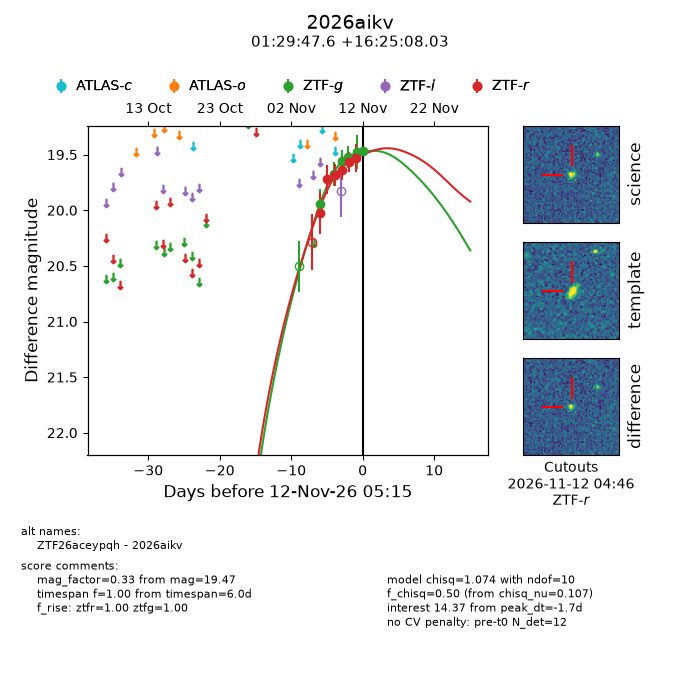
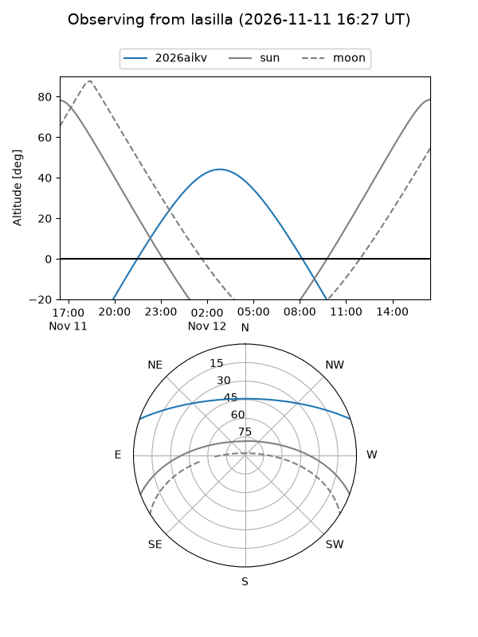
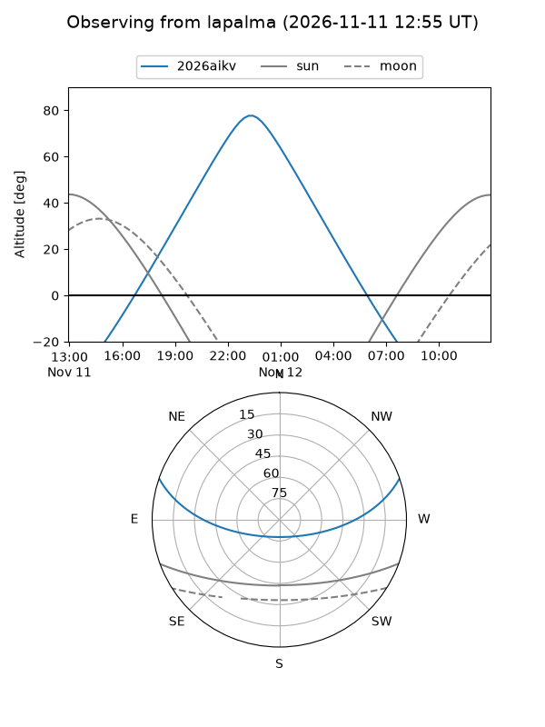
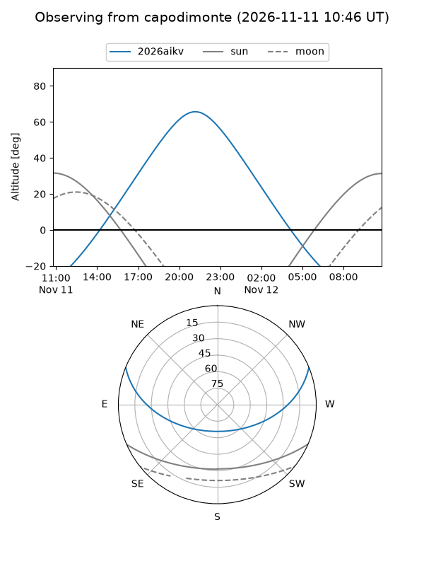
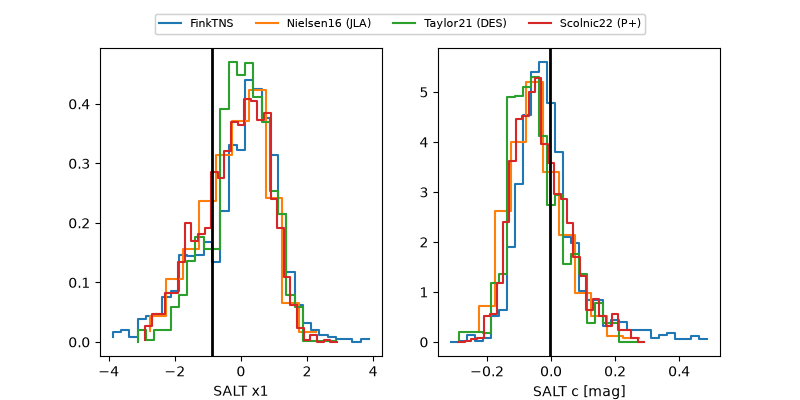

2026aikv
Target 2026aikv at 2026-11-12 05:17
Aliases and brokers:
FINK-ZTF: ztf.fink-portal.org/ZTF26aceypqh
Lasair-ZTF: lasair-ztf.lsst.ac.uk/objects/ZTF26aceypqh
ALeRCE-ZTF: alerce.online/object/ZTF26aceypqh
YSE-PZ: ziggy.ucolick.org/yse/transient_detail/2026aikv
TNS name: wis-tns.org/object/2026aikv
Direct TNS query: direct search
alt names
ZTF26aceypqh (ztf,fink_ztf)
2026aikv (tns,yse)
Coordinates:
equatorial (ra, dec) = 22.4485,+16.41890
equatorial (HMS+DMS) = 01:29:47.64,+16:25:08.03
galactic (l, b) = (136.1023,-45.46971)
Flags:
peak dt: -1.7
Photometry:
last ztfg=19.47, ztfr=19.53
6 ztfg, 6 ztfr detections
Lightcurve

Visibility



Additional plots
